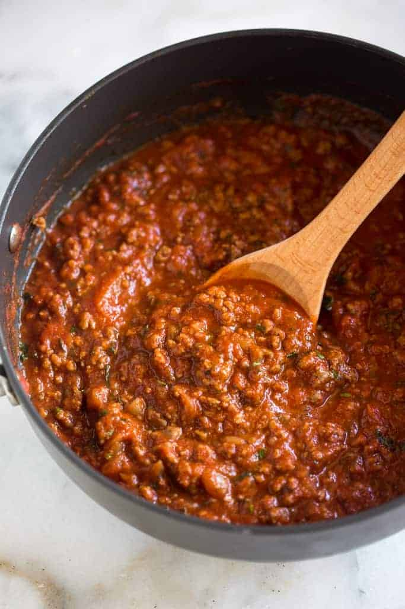

Meat Sauce
Home

Description
A classic meat sauce that is easy to make and comforting. It can be made ahead of time and used in a number of other recipes such as spaghetti,
lasagna, or any other baked pasta dish. I like to make batches and freeze them for easy week night meals.
Ingredients
- 1 pound ground beef
- 1 medium onion, diced
- 4 cloves minced garlic
- 1(28oz) can diced tomatoes
- 1(16oz) can tomato sauce
- 1(6oz) can tomato paste
- 2 teaspoons dried oregano
- 2 teaspoons dried basil
- 1 teaspoon salt
- 1/2 teaspoon ground black pepper
Steps
- Gather all ingredients
- Combine ground beef, onion, and garlic in a large saucepan over medium-high heat. Cook and stir until meat is browned and crumbly and the vegetables are tender.
- Stir in the diced tomatoes, tomato sauce, and the tomato paste. Season with oregano, salt, basil, and pepper. Simmer for 1 hour stirring occasionally.
- After simmering the sauce for 1 hour serve with your favorite pasta and enjoy.